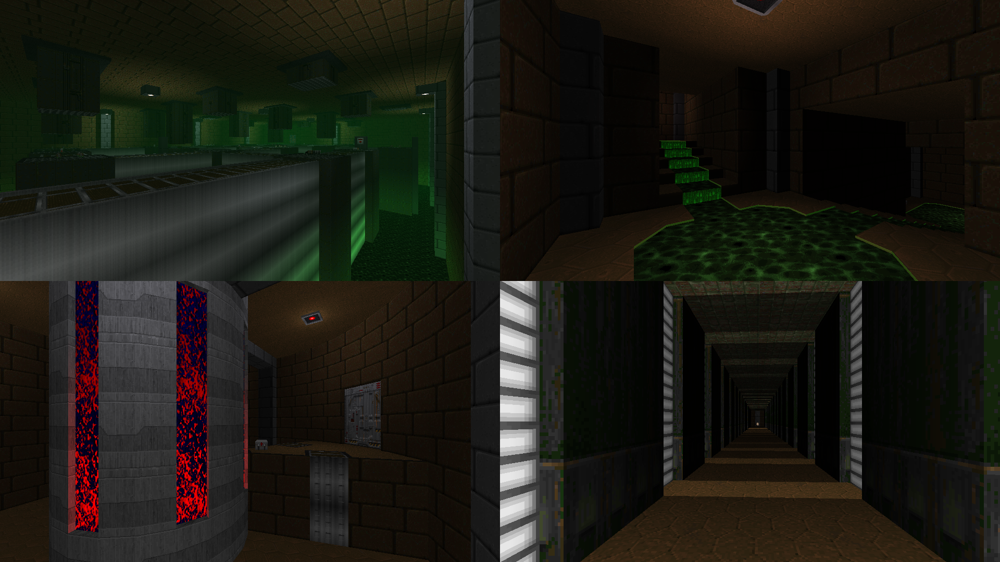

DOWNLOAD LINKS



| Year | 2023 |
| IWAD | Doom II |
| Source port | GZDoom |
| Game mode(s) | Single-player |
| Map(s) contributed | MFG01 |
| Other contributions | Compilation, project co-lead |
Hellwhole is a 7-map GZDoom mapset made for Piece of Pie Software's 15th anniversary, co-hosted by myself and
InfernalMonsoon. With maps by three people (myself included), the maps are split into episodes, with each episode being
dedicated to a single participating mapper.
My episode, "You Call THIS a Factory?!", consists of a single map that shares the same name. The map starts in a small cave
section that leads to the factory entrance, and the player navigates the complex in search of keycards that open specific doors
and ultimately lead to the exit. In addition, the map features a shop system that uses armor as currency in exchange for extra
items that make the adventure slightly easier.
Next to acting as the project's co-host and making the aforementioned map, I was in charge of compilation duties.